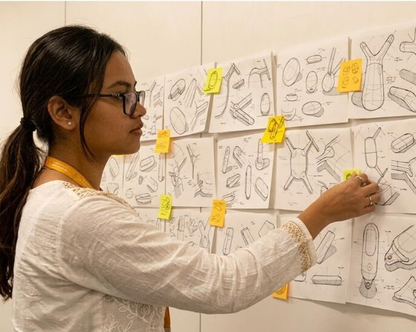
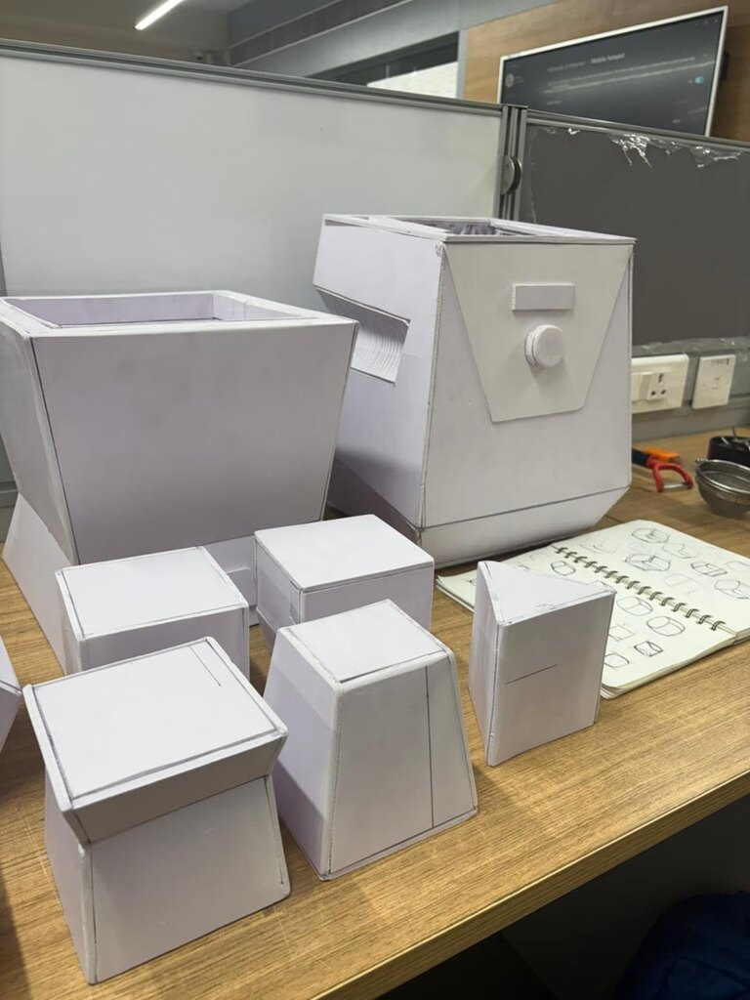
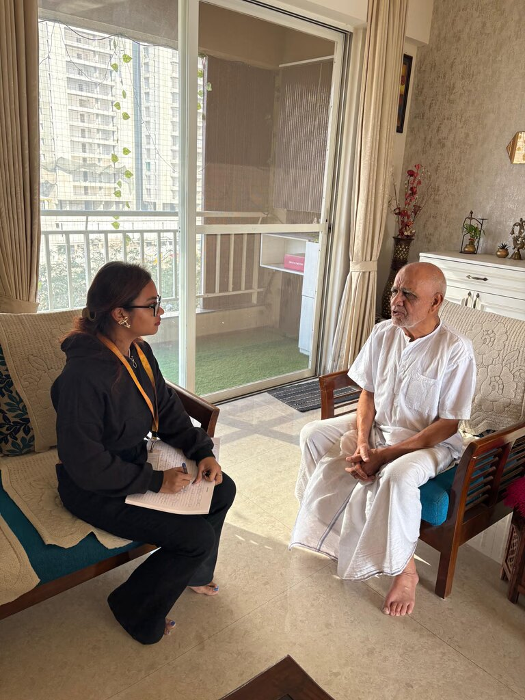

Sit with uncertainty before rushing to solutions. Better outcomes come from asking clearer questions, not quick answers.

Good design isn’t about getting it right first—it evolves through testing and reflection.

Paying attention to users, context, and constraints continues to shape how I think and work.
This way of thinking shapes how I move from understanding to making.
I approach design as a gradual shift from understanding to making. My process stays flexible, but it is always grounded in people, context, and intent.
I understand users, their context, and the larger system around them. This grounds every decision that follows.
Research helps me filter problems and prioritize what’s worth solving before moving into form.
Sketches and rough prototypes help me explore ideas, test assumptions, and learn quickly.
Testing and feedback guide refinement. I revisit decisions to improve clarity, usability, and purpose.
Each iteration builds on learning until the work feels resolved, meaningful, and grounded in real use.